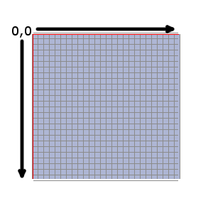
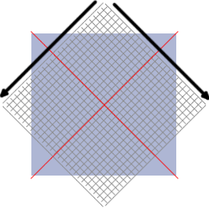

In this tutorial, I will show you how to draw a clock using the HTML5 canvas element and Javascript.
This is the technique used in my Clock for Google Chrome™ Extension. Other tutorials and techniques are available, but what I hope to do here is not just tell you what to do, but why.
The clock that we end up with will be fully customisable so by using this, you can achieve your own look and feel.Before we dive in, let's begin by looking at the HTML5 canvas element and why we should use it for our clock.
The clock is basically a moving picture. We could use old school <img> tags, but creating one of those for every combination of minutes and hours and overlaying them would be complicated and cumbersome. Or we could use Flash, but...
...well, we don't want to use Flash because it takes longer to load, requires plugins, isn't supported on many devices (especially mobile) and generally speaking, is complete overkill or something as simple as a clock.
The HTML5 canvas element provides an HTML element that we can draw upon using Javascript to render our clock dynamically without using static image files. It is natively supported on all modern browsers and requires no plugins or additional configuration.
As long as one is using an HTML5-compliant browser (you probably are these days), one can create a canvas element thus:
<canvas id='clockcanvas'></canvas>
So far, so good.
This canvas will dictate how big our clock is, so we need to give it a size.
This clock will be round, so the canvas will the same height and width (i.e. a square). Now here's a really annoying thing that we have to consider with the canvas element. If we set the size in CSS like this:
.clockcanvas {height: 100px; width: 100px;}
...strange things happen. This is because the canvas is actually created with a default size of 300px by 150px and then the CSS specification merely stretches the canvas to the specified size instead of resizing it. This has horrible effects on the things we draw on it and means that our clock will end up squashed up on the left half of the canvas. Therefore, and this goes against every fibre of my Web 2.0 being, we need to explicitly set the size of the canvas in HTML:
<canvas id='clockcanvas' height='100' width='100'></canvas>
I'm sure that somebody somwehere has a good reason why a) a canvas element has a default size and b) why its contents are stretched on a resize, but I simply cannot understand why this would be beneficial at all. But hey, maybe that's just my opinion.
OK, so now we have a 100px square canvas on an otherwise empty page, a blank canvas if you will! Now it's time to take a look at how locations on the canvas are referenced. In its default form, as we see it now, the origin (position 0,0) is located at the top left and the x and y axes run left to right and top to bottom respectively from the origin:

Now, here's where it starts to get interesting. We could, if we so chose, use this coordinate system to work out where to draw the clock's hands at any given time. We would need to use some trigonometry to work out where each end of each hand would be at any given time and draw a line between these two points.
But that's not how a clock works.
A real clock's origin is the centre, not the top corner, and instead of drawing hands in various locations, it simply rotates them at different speeds. Fortunately, the HTML5 canvas element provides translate() and rotate() functions which let us do the same. Let's take a closer look.
The translate() function simply moves the origin of the canvas's coordinate grid
NB: It does NOT move the canvas, only the coordinate grid overlaying it!
We'll look at how we fit this in to our Javascript in the next section, but for now we'll just look at the concept. First we need to ask the canvas element for a reference to its coordinate grid. This is called the context.
var c = document.querySelector('clockcanvas').getContext("2d");
"Eh?", I hear you ask, "'2d'? Does that mean there are other 'contexts' available too?"
Nope. I guess one day there might be in the hyper-4d-timespaceweb or something, but for now, we are limited to a 2d canvas on our 2d screens.
Once we have the context, we can translate it thus:
var size = document.querySelector('clockcanvas').height / 2;
c.translate(size, size);
This code moves the origin of the coordinate system to the middle of the canvas, which is exactly where we want to work from because that's exactly where a real clock works from:

And finally, in this introductory section, let's look at rotate. It's quite simple to use, as long as you stick to the use of radians rather than degrees.
So if we wanted to rotate the canvas's context (not the canvas itself remember!) by 45 degrees, we simply say:
c.rotate(Math.pi /4);

Any line that is drawn along one of the axes will therefore be rotated by the amount specified in the rotate method, just like the hand of a clock.
OK, so now we know that we're going to use a canvas element to draw our clock and we know that we are going to use the transform and the rotate functions to make it behave like a clock. In the next section, we'll be looking at creating a javascript function to draw a simple clock with hour, minute and second hands.